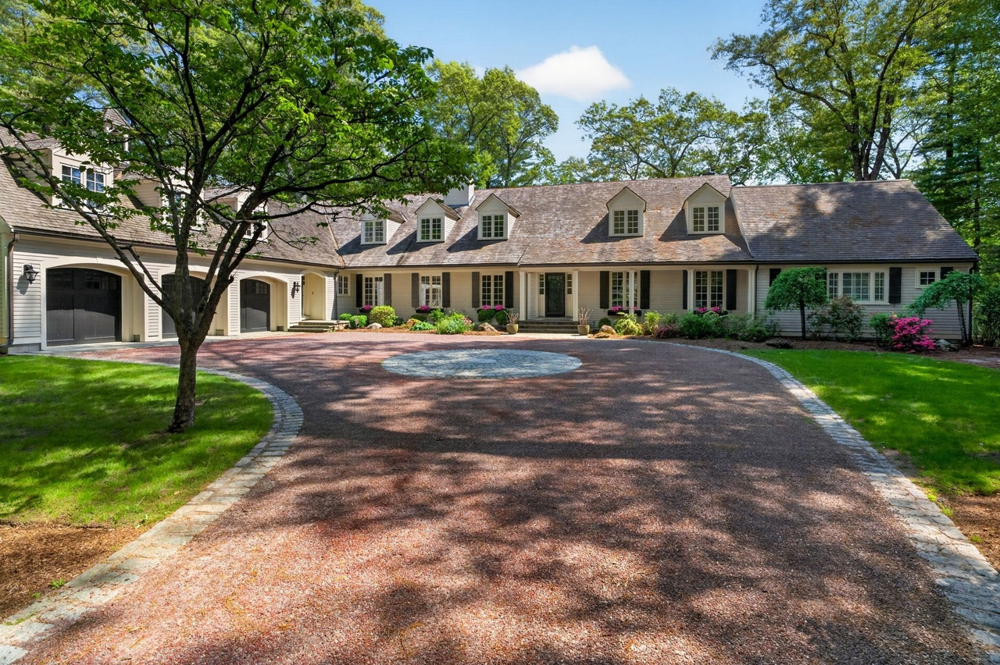

12 Winding River Cir, Wellesley, MA 02482
$4,999,000 - Available Today!
6 bedrooms • 6.5 bathrooms • 8,729 sq ft

Welcome to 12 Winding River Cir, a
charming property located in the highly sought-after town of Wellesley, Massachusetts. This stunning
property offers a unique blend of luxury, comfort, and natural beauty, making it the perfect place to call
home!
Highlights
- Sprawling 8,729 sq ft with 6 bedrooms and 6.5 bath
- Set on a waterfront 2.89 acres lot
- Updated Kitchen with a light-filled breakfast room
- Gracious and flexible floor plan
- First floor primary suite
- Flat courtyard driveway off protected cul de sac
- Assigned school district among top 5% in Massachusetts
- Renovated in 2023
- Minutes from Wellesley Trails and Town Center
Features of this property
- Architect Patrick Ahern reimagined this home with a focus on maximizing outdoor living and views as
well as creating a seamless flow between indoor and outdoor spaces.
- The exterior features a flat grassy backyard and stone patios, perfect for entertaining or relaxing
while enjoying the natural beauty of the surroundings.
- This property has no HOA, allowing for greater flexibility and freedom in how you use and enjoy your
home.
- It is also conveniently located near the Charles River, providing easy access to outdoor activities such
as kayaking, fishing, bird-watching,and walking along scenic trails.
- 3 attached heated garage spaces and 6 uncovered parking spaces that offer ample room for all your
vehicles and outdoor activities.
- This home has 200+ AMP electric service making it suitable for modern appliances and energy needs.
- 5 quaint fireplaces throughout the offers ample warmth and ambiance during the colder Massachusetts
winters.
- Forced air natural gas heating system and central air conditioning ensures comfort throughout the year.
- Primary bedroom features walk-in closet, private bathroom, vaulted ceilings, and private access to the
outdoors.
- Large lower level filled with a bar, gym, and media room which are perfect for entertaining guests
year-round.
Key Details
- Home Type: Single Family Colonial Cape Cod Home
- Year Built: 1989
- Lot Size: 2.89 acres
- Square Footage: 8,729 sq ft
- Bedrooms: 6
- Bathrooms: 6.5
- Pricing per square foot: $573
- HOA: None
- Heating: Forced Air, Natural Gas
- Cooling: Central Air Conditioning
- Garage: 3 attached heated garage spaces and 6 uncovered parking spaces
- Outdoor Features: Private Deck, Garden, Balcony, and Patio
- Remodeled: 2023
- Foundation: Concrete Perimeter
- School District: Wellesley Public Schools
- Nearby Amenities: Wellesley Trails, Town Center, Charles River
About this Neighborhood, School System, and Community
Wellesley is a town in Norfolk County, Massachusetts, United States. It is part of Greater Boston and is
located 15 miles west of downtown Boston. The town is home to several parks, recreational facilities, and
cultural institutions, making it an attractive place to live for families and professionals alike.
Wellesley is also known for its historic architecture, with many well-preserved homes and buildings dating
back to the 19th and early 20th centuries. The town has a strong sense of community, with numerous events
and activities throughout the year that bring residents together.
Community events and festivals are held throughout the year, such as the annual Wellesley Festival of Arts,
fostering a strong sense of belonging among residents.
Schools in Wellesley rank among the best in the state, providing excellent educational opportunities for
students.
Overall, Wellesley offers a high quality of life, combining natural beauty, cultural amenities, and a
strong sense of community, making it a desirable place to call home. Make this house your home today!
Contact the agent
For more information about this property, please contact the listing agents: Christine Lawrence at 781-820-1336 or Betsy Kessler at 617-306-6884
from Rutledge Properties
See the original on Redfin and Zillow